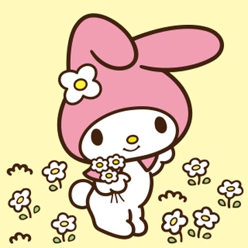

Go back to Sanrio World
MY MELODY

TOP FIVE FACTS
- My Melody is famously known to have a pure heart.
- She is honest and goodnatured. Her favorite hobby is baking cookies with her mother.
- My Melody was born in the forest of Mary Land.
- My Melody was born on January 18, making her a Capricorn.
- In Sanrio crossovers, My Melody has joined Hello Kitty in global tours and theme parks, including Sanrio Puroland in Tokyo.